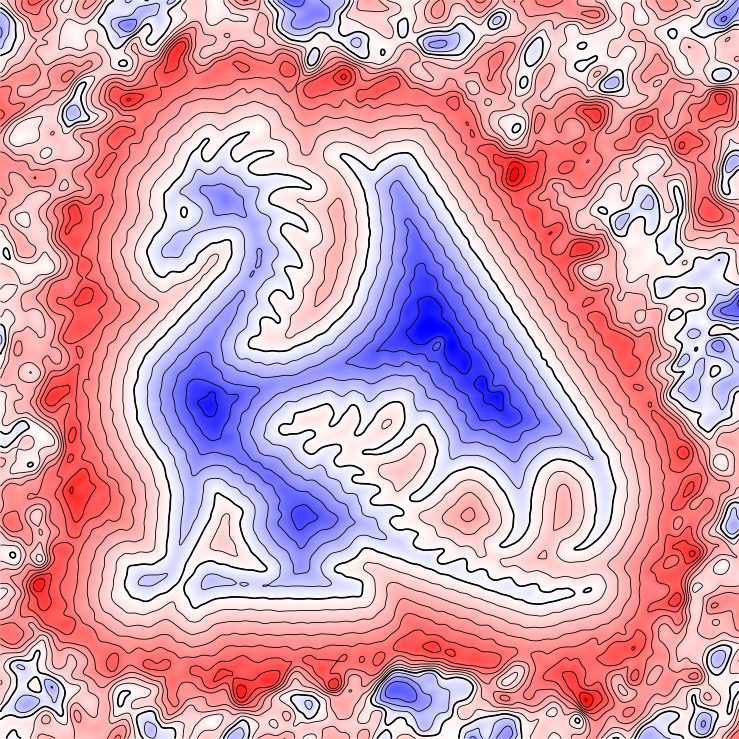
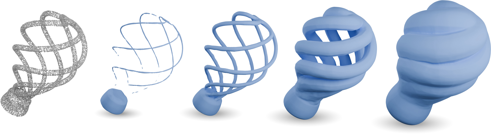

ImplicitLab
The implicit lab is a python library for the computation of implicit neural representations (INR) of geometrical objects. It is built on top of pytorch and provides utilities for geometric dataset handling and sampling, neural architecture definitions, training, geometrical request and visualization.
Implicit neural representations are a recent technique for encoding a signal in the parameters of a neural network. This library focuses of neural representations of surfaces, which are defined as the zero level set of some continuous function over space, like the signed distance function.

Signed distance field of a 2D dragon model [Sitzmann et al., 2020]
Level sets of a 3D lamp model computed from an oriented point cloud [Coiffier & Béthune, 2024]Features
The library currently features:
- Loading, processing and sampling of various input geometry types (point clouds, polylines, surface meshes) to generate relevant training datasets
- Training of various neural models according to published algorithms
- Geometrical queries on INRs
Installation
To install implicitlab, simply type:
Dependencies
Implicitlab currently depends on the following libraries:
- pytorch
- deel-torchlip
- meshio
- mouette
- libigl
- triangle
- numpy
- scipy
- scikit-image
- matplotlib
Bibliography
Here is a list of relevant articles partially or completely implemented in the library:
-
Anil, C., Lucas, J. and Grosse, R. (2019). Sorting out Lipschitz function approximation (arXiv:1811.05381). arXiv. https://arxiv.org/abs/1811.05381 ↩
-
Araujo, A., Havens, A., Delattre, B., Allauzen, A. and Hu, B. (2023). A Unified Algebraic Perspective on Lipschitz Neural Networks (arXiv:2303.03169). arXiv. https://arxiv.org/abs/2303.03169 ↩
-
Atzmon, M. and Lipman, Y. (2020b). SALD: Sign Agnostic Learning with Derivatives. International Conference on Learning Representations. ↩
-
Atzmon, M. and Lipman, Y. (2020a). SAL: Sign Agnostic Learning of Shapes From Raw Data. 2020 IEEE/CVF Conference on Computer Vision and Pattern Recognition (CVPR), 2562--2571. pp. https://doi.org/10.1109/CVPR42600.2020.00264 ↩
-
Coiffier, G. and Béthune, L. (2024). 1-Lipschitz Neural Distance Fields. Computer Graphics Forum, 43(5), e15128. p. https://doi.org/10.1111/cgf.15128 ↩
-
Gropp, A., Yariv, L., Haim, N., Atzmon, M. and Lipman, Y. (2020). Implicit Geometric Regularization for Learning Shapes (arXiv:2002.10099). arXiv. https://arxiv.org/abs/2002.10099 ↩
-
Luo, L., Xiong, Y., Liu, Y. and Sun, X. (2019). Adaptive Gradient Methods with Dynamic Bound of Learning Rate (arXiv:1902.09843). arXiv. https://doi.org/10.48550/arXiv.1902.09843 ↩
-
McGinnis, J., Hölzl, F. A., Shit, S., Bieder, F., Friedrich, P., Mühlau, M., Menze, B., Rueckert, D. and Wiestler, B. (2025). Optimizing Rank for High-Fidelity Implicit Neural Representations (arXiv:2512.14366). arXiv. https://doi.org/10.48550/arXiv.2512.14366 ↩
-
Keller Jordan. (n.d.). Muon: An optimizer for hidden layers in neural networks. https://kellerjordan.github.io/posts/muon/. ↩
-
Park, J. J., Florence, P., Straub, J., Newcombe, R. and Lovegrove, S. (2019). DeepSDF: Learning Continuous Signed Distance Functions for Shape Representation (arXiv:1901.05103). arXiv. https://doi.org/10.48550/arXiv.1901.05103 ↩
-
Sitzmann, V., Martel, J., Bergman, A., Lindell, D. and Wetzstein, G. (2020). Implicit Neural Representations with Periodic Activation Functions. Advances in Neural Information Processing Systems, 33, 7462--7473. pp. ↩
-
Tancik, M., Srinivasan, P., Mildenhall, B., Fridovich-Keil, S., Raghavan, N., Singhal, U., Ramamoorthi, R., Barron, J. and Ng, R. (2020). Fourier Features Let Networks Learn High Frequency Functions in Low Dimensional Domains. Advances in Neural Information Processing Systems, 33, 7537--7547. pp. ↩
-
Wang, Z., Wang, C., Yoshino, T., Tao, S., Fu, Z. and Li, T.-M. (2025). HotSpot: Signed Distance Function Optimization with an Asymptotically Sufficient Condition. Proceedings of the IEEE/CVF Conference on Computer Vision and Pattern Recognition, 1276--1286. pp. ↩
-
Wang, Z., Zhang, Y., Xu, R., Zhang, F., Wang, P., Chen, S., Xin, S., Wang, W. and Tu, C. (2023). Neural-Singular-Hessian: Implicit Neural Representation of Unoriented Point Clouds by Enforcing Singular Hessian (arXiv:2309.01793). arXiv. https://doi.org/10.48550/arXiv.2309.01793 ↩